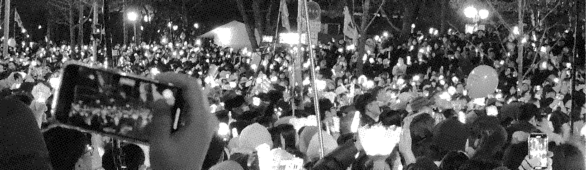
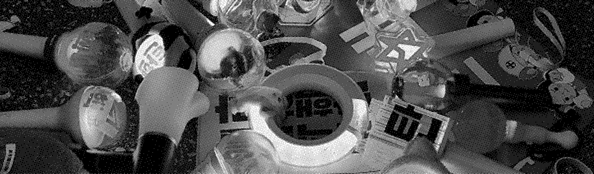

1.
연결의 규칙
"홀로 걷지 않는다"

시위에 참여한 사람들은 광장에서 우연히 마주친 타인들과 자연스럽게 연결된다. 처음에는 서로의 이름도 모르는 낯선 사람들이지만, 같은 방향을 바라보고 같은 목소리를 내며 걷는 과정 속에서 일시적인 공동체를 형성한다.
사람들은 서로의 위치를 확인하고, 인파 속에서 뒤처지거나 위험에 처한 사람이 없는지, 발 밑에 턱이 있다면 서로 알려주는 등 함께 이동한다.
이러한 연결은 단순한 동행을 넘어 안전을 지키기 위한 실질적인 연대의 방식으로 작동한다.
2.
비폭력의 규칙
"길은 막아도 마음은 막지 않는다"

경찰이나 공권력과 대치하는 상황이 발생하더라도 우리는 서로를 보호하며 연대한다. 광장은 다양한 의견이 모이는 공간이지만, 그 안에서의 행동은 비폭력의 원칙을 바탕으로 이루어진다.
참여자들은 불필요한 충돌을 피하고 질서를 유지하며, 자신의 생명과 신체에 직접적인 위협이 가해지는 경우를 제외하고는 폭력을 행사하지 않으며,
대화와 연대, 집단적 의사 표현을 통해 상대 측에게 뜻을 전달하고자 하는 것을 지향한다.
3.
지속의 규칙
"지나간 자리가 깨끗한 길"

시위가 끝난 뒤의 광장은 시작되기 전과 다르지 않아야 한다. 참여자들은 자신이 머물렀던 자리를 스스로 정리하고, 버려진 쓰레기와 물품을 수거하며 공동의 공간을 함께 관리한다.
이는 자신이 요구하는 사회적 가치에 대한 책임을 행동으로 보여주는 실천이기도 하다.
광장을 깨끗하게 유지하는 행위는 시민들이 스스로 질서를 만들고 유지할 수 있음을 증명하며, 민주주의가 성숙한 시민 의식 위에서 작동한다는 사실을 드러낸다.